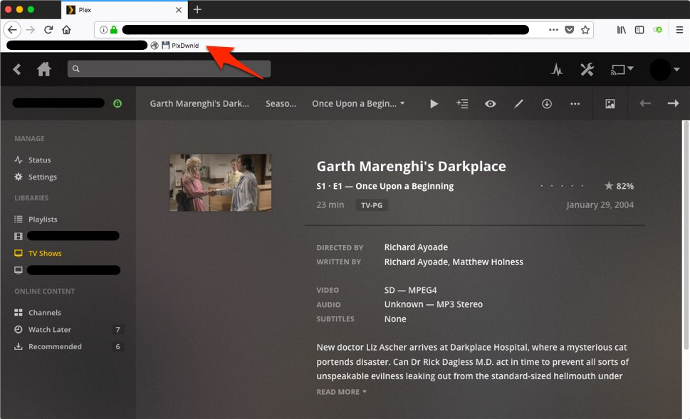

This is a bookmarklet that will open the current media from a Plex web interface in VLC for streaming. As VLC
doesn't have a builtin handler for the vlc:// protocol an additional application is needed to be installed for
that first.
Based on and forked from:
https://piplong.run/plxdwnld/.
How to install
-
Install vlc:// protocol handler:
https://github.com/stefansundin/vlc-protocol
-
Drag this button to your bookmarks bar:
Open In VLC
How to use
-
Open the Plex web interface and browse to the details page of a media item. The bookmarklet currently works
for Movies and TV Shows.
-
Click the bookmark button to open the file in VLC.
The code
You can check the code on
Github.
Screenshot
